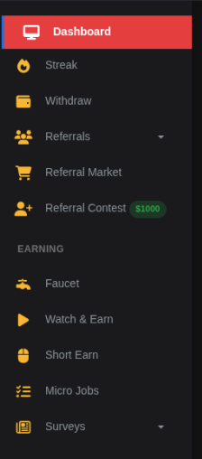

Disclosure
This article contains referral links. If you sign up through our links, we may earn a small commission at no extra cost to you. See our full disclaimer.
MakeYouTask replaced the Wheel for Win with a new faucet claimable every 20 minutes, up to 30 times per day. The new system rewards active users more than the random daily wheel, making it better for consistent earners. Combined with Watch & Earn, active users can earn slightly more per day than before.
If you've been using MakeYouTask and noticed the Wheel for Win is gone — you're not imagining it. The devs have replaced it with something different: a faucet that you can claim every 20 minutes, up to 30 times per day.
This is a notable change. The Wheel was a one-shot daily feature with some element of randomness. The new faucet is time-gated and repeatable throughout the day, which changes how you interact with the platform entirely.
We've been testing it since it launched. Here's exactly how it works, what the experience is like, and whether it's worth working into your daily routine.

What Changed: Wheel for Win Is Out, Faucet Is In
The Wheel for Win was a daily bonus spin — you'd get one shot per day at a random prize. Low variance, low ceiling, and honestly not something most users thought about much. It was a nice-to-have rather than a core part of the earning stack.
The new faucet works on a completely different model. Instead of one daily spin, you now have a 20-minute timer that resets each time you claim. You can claim a maximum of 30 times per day, which works out to claims spread across roughly 10 hours of the day if you hit every window.
In practice, nobody is going to claim exactly every 20 minutes for 10 hours. But even claiming it opportunistically — a few times in the morning, a few in the evening — stacks up over time, and that's the more realistic use pattern for most people.
The Core Shift
One random daily spin has been replaced with a consistent, repeatable faucet. This is more predictable income — even if the per-claim amount is small, you can plan around it. That's an improvement for anyone running a systematic earning routine.
How the Faucet Works (Step by Step)
The process is straightforward, though there are a couple of friction points worth knowing about before you sit down to claim for the first time.
- Navigate to the Faucet section in your MakeYouTask dashboard sidebar. It replaces where Wheel for Win used to sit.
- An invisible popover ad loads. You'll need to click through it before you can interact with the reCAPTCHA. More on this below.
- Solve the reCAPTCHA. MakeYouTask uses standard Google reCAPTCHA as the anti-bot check. Complete the challenge as normal.
- Hit the anti-bot link. There's an additional anti-bot verification step — a link you'll need to click to confirm you're human. This is separate from the reCAPTCHA.
- Claim lands in your balance. Once both checks pass, the reward is credited and your 20-minute timer starts.
The whole process takes about 30-60 seconds per claim once you're used to it. The first time is a bit jarring because the flow isn't immediately obvious.
The Ads and Anti-Bot Friction: Honest Assessment
Let's address the two things that most users immediately notice: the invisible popover ad, and the multi-step verification.
The Invisible Popover Ad
Before you can solve the reCAPTCHA, an invisible overlay ad loads on the page. You're effectively forced to interact with it — clicking through the ad — before the faucet becomes usable. It's not immediately obvious that this is what's happening, which is why some users initially think the page is broken.
Is it annoying? Yes, a bit. But here's the context: MakeYouTask is a free platform paying you real crypto to click a button every 20 minutes. That ad revenue is part of how they fund those payouts. We're not fans of invisible overlays as a UX pattern, but we also understand why it's there, and we're not going to pretend it's outrageous when the platform is paying us rather than the other way around.
What to Expect
If the page seems unresponsive when you try to click the reCAPTCHA, look for an ad overlay first. Click through it, and the reCAPTCHA will become interactive. Once you know this, it's a minor inconvenience rather than a blocker.
reCAPTCHA + Anti-Bot Link
The double verification — reCAPTCHA plus an anti-bot link — does add friction. For a faucet you're claiming up to 30 times a day, that friction compounds. Two separate checks per claim is more than most faucets ask for.
We'd genuinely hope the devs tune this over time. The MakeYouTask team has shown they respond to feedback (the Telegram channel is active, bugs get fixed), so there's a reasonable chance the flow gets smoother with iteration. For now, it works — it just requires a bit of patience.
We're calling it out honestly because you should know what you're getting into. But we're also not going to exaggerate the frustration — it's a 30-60 second process to claim free crypto, and that's still a good deal.
On Ad Revenue and Platform Sustainability
MakeYouTask is sustaining its payouts through ad revenue. The popover ad, the reCAPTCHA, the anti-bot checks — these all serve the same ultimate purpose: making sure real humans are seeing those ads and preventing bots from gaming the system. We support that. A platform that can sustain its ad revenue is a platform that can keep paying you.
What Can You Actually Earn From the Faucet?
Faucet payouts vary — that's the nature of crypto faucets. The amounts per claim are small, but the 30-claims-per-day cap means there's a ceiling worth estimating.
| Claiming Pattern | Claims/Day | Effort Level |
|---|---|---|
| Casual (morning + evening) | 6–10 | Low |
| Moderate (regular check-ins) | 12–18 | Medium |
| Maximum (every 20 min) | 30 | High |
The faucet fits best in the "casual to moderate" category for most people. It's not something you'd optimise your entire day around, but it's a consistent small earner when you're already on the platform doing other tasks like MicroEarn or PTC ads.
Think of it as a small bonus on top of the existing earning methods, not a replacement for them. Stack it with the video tasks and ad clicks you're already doing, and the daily total gets meaningfully better.
How to Work the Faucet Into Your Routine
The best approach is to claim whenever you're already on the platform doing other things. If you're running the MicroEarn automation macro, you're already leaving a tab open. Claim the faucet when you check in on it. If you're doing PTC ads, claim after your ad session.
The 20-minute timer means you're not waiting around — it'll be ready again before you've finished a coffee. The 30-claim daily cap means you don't need to be obsessive about it to get decent value out of it.
If you're already a MakeYouTask user, the faucet is an easy addition. If you're not yet on the platform, our full MakeYouTask review has everything you need to decide if it's worth adding to your stack.
You'll need a FaucetPay wallet to withdraw your earnings. Minimum withdrawal is low, and payouts are fast. If you don't have one yet:
Faucet: Pros and Cons
What Works
- Repeatable every 20 minutes (up to 30x/day)
- More consistent than the old random wheel
- Fits naturally into an existing MakeYouTask routine
- Ads support the platform — fair trade
- Dev team is active and has shown willingness to iterate
What Could Be Better
- Invisible popover ad is confusing at first
- Double verification (reCAPTCHA + anti-bot link) adds friction
- Per-claim amounts are small
- Claiming 30x/day requires real time commitment
Final Thoughts
Bottom Line
The new faucet is a meaningful improvement over the Wheel for Win — more predictable, more repeatable, and better suited to a systematic daily routine. The ad friction is real but understandable, and we'd expect the UX to improve as the devs get feedback. Add it to your MakeYouTask routine and claim it opportunistically. It's not the biggest earner on the platform, but it's free money and it's consistent.
We're keeping an eye on it as MakeYouTask continues to develop. Check the 2026 experience update for a broader picture of where the platform stands right now.
Was this article helpful?